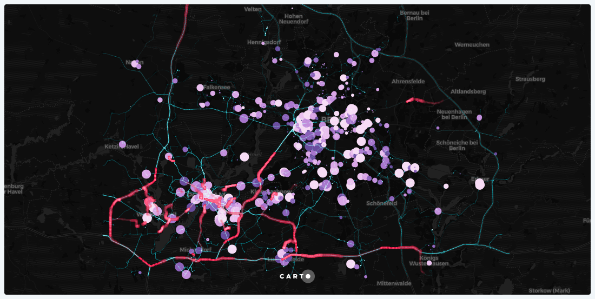

Service 01
Indoor and outdoor mapping.
We turn floor plans, images and site notes into maps that people can search, update and use for route planning. Work can include indoor maps, outdoor surveys and converting CAD drawings into map data.

The problem
Plans and spreadsheets need checking before they work as maps.
Many organisations keep information about spaces in CAD files, PDF plans and spreadsheets. These files may use different locations and labels, so they cannot be reliably searched or combined as they are.
We check the source of the information, put it in a consistent format and record its accuracy. That makes the finished map easier to search and update. If survey-level accuracy is needed, we agree on the survey method and checks before work begins.
What we do not do: we do not present a traced drawing as a survey-grade record. Where positional accuracy matters, the accuracy requirement, method and check are stated in the scope note.
Scope
What this service covers.
GIS mapping
Feature classes for buildings, routes, facilities and points of interest, with attributes, domains and topology rules.
Indoor mapping
Floor polygons, units, corridors, doors, lifts, stairs and level connectors, drawn from plans and checked on site.
Outdoor data collection
GNSS and mobile collection of entrances, approaches, parking, service points and site features, with a field record.
CAD and DWG to GIS
Layer cleanup, coordinate assignment, geometry repair, snapping, polygon construction and attribute transfer.
Georeferencing
Control-point selection, transformation, residual checking and a stated positional tolerance for the result.
Feature extraction
Buildings, roads, utilities, facilities and open space from imagery or drawings, with a documented interpretation rule.
Spatial databases
PostgreSQL and PostGIS schemas, keys, indexes, views and access roles, documented with a data dictionary.
Route networks
Pedestrian and vehicle graphs with edge costs, level changes, accessible alternatives and turn constraints.
Validation and QA
Topology checks, attribute completeness, duplicate detection, route walk-throughs and a signed QA record.
Methods
How the dataset is built.
| Method | What it produces | How it is checked |
|---|---|---|
| Source audit | Register of plans, imagery, lists and existing datasets, with currency and gaps | Cross-check against a site walk or venue interview |
| Georeferencing | Drawings aligned to a stated coordinate reference system | Control-point residuals and overlay against independent imagery |
| Digitisation | Units, corridors, facilities and connectors as topology-aware features | Topology rules, sliver checks and a second-pass review |
| Attribute structuring | Names, categories, identifiers and relationships a system can query | Domain validation and completeness report |
| Network construction | Routable node and edge graph for pedestrians and vehicles | Route walk-through and comparison with known journeys |
| Field verification | Corrected entrances, closures, lifts and waypoints | Signed field checklist with photographs where permitted |
Outputs
What you receive.
Before work starts, we agree what the map package will include. It may contain:
- A spatial dataset in the agreed format: PostGIS, GeoPackage, GeoJSON or Shapefile.
- A data dictionary describing every feature class, attribute and domain.
- A route network with documented edge costs and level connectors.
- A QA report covering topology, completeness, positional checks and known limitations.
- Print-ready maps or web map tiles where the scope includes visualisation.
- A short handover note explaining how to update the dataset.
Questions
Common questions.
What formats can you deliver?
PostGIS, GeoPackage, GeoJSON, Shapefile, CAD where required, and map tiles for a web interface. The format is agreed at scoping so it fits the system that will consume it.
How accurate is the mapping?
Accuracy depends on the source and the method. We state a positional tolerance in the scope note and report the check that was used. A traced plan and a GNSS survey are not the same product.
Can you update an existing dataset?
Yes, after an audit of its schema and geometry. Where the existing structure cannot support the requirement, we will say so rather than quietly building on a weak base.
Who owns the resulting data?
The client owns the project data. Waide retains its methods, templates and tools. Ownership, licensing and export terms are written into the contract.
Next step
Send a sample of what you have.
Send a plan, map data or a short description of the site. We will tell you what can be prepared from it and what needs to be checked on site.